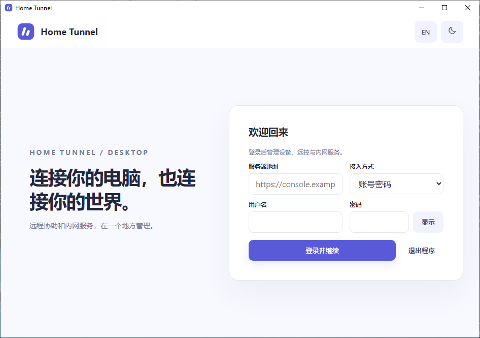

Home Tunnel 稳定版 10.1.0
远控走 UDP，服务发布走 FRP。
用自己的服务器连接家里的电脑和服务。远程桌面在授权后走端到端 DTLS 加密的 UDP，优先直连；NAS、Home Assistant 和其他本地服务通过 FRP 发布。稳定组合为 Server / Client 10.1.0 + Android 10.0.0。部分验收项目未运行，验证尚未完成，清单见发布说明。
10.1.0 远控
修复审批弹窗，阻止连接本机，加入短时、单次、仅限远控的原生登录交接和当前设备改名。新流程需要 Server / Client 10.1.0 与 api-v1.5.0；Android 保留 10.0.0。
双方登录同一台服务器，再建立直连。
被控端登录即开启被控。用分组显示的 9 位设备 ID 找到设备。陌生连接在被控端右下角弹出审批框；固定密码跳过审批；一次性临时密码使用同一个设备 ID。固定密码和临时密码都不是账号密码，设备 ID 也不是接入码。接受后本次连接放行画面、键鼠、剪贴板、文件和系统声音，麦克风不会自动放行。画面和输入不经过 FRP。
- Windows、Web 和 Android 可以控制其他设备。允许控制本机只出现在 Windows 被控端。
- 直连失败时，浏览器控制端可以经服务器可选的 UDP TURN 中继连接 10.1.0 被控端。载荷端到端加密，中继读不到内容。没有 TCP 回退。
- Android 控制端和 9.x 被控端只走直连。UDP 被封时连接失败。
已验证范围与未验证项目
哪些测过，哪些没有。
10.1.0 的原始 Windows worker 字节在同机 Chromium 与生产源码 QA host 的隔离回环环境中通过 30 次连接、7202.463 秒活动和 1391 次采样；显式重启 QA host 后，新配对恢复输入耗时 3507.7 ms。
这些结果不代表完整安装版 GUI、Windows 服务、两台独立 Windows 终端、Android、断网恢复、24 小时在线或 Linux/macOS 运行验收。24 小时测试未运行，验证尚未完成。声音、剪贴板、文件与完整授权界面未由本轮长测建立验收；10.0.0 开发构建结果只保留为历史。锁屏、登录前、UAC 和麦克风回传仍不可用。
仅 Windows 被控端
允许控制本机
审批、固定密码和一次性临时密码都在被控的 Windows 电脑上设置。无人值守就是已登录桌面上的固定密码。连接期间被控端显示"正在被远程控制 · 断开"条。设备 ID 用来识别那台电脑。一次性接入码只用来把电脑登记到服务器，不能当作远控密码。
FRP 0.70.1
发布本地服务时，走原来的隧道。
家庭电脑或 NAS 上的 Agent 连接你的 FRP 服务。HTTP/HTTPS 经过你自己的边缘和网关；TCP/UDP 使用管理员分配的端口，不附带 HTTP 登录保护。目标应用自己负责认证和加密。
- 部署 10.1.0 服务端，改掉初始管理员密码，并打开 MFA。
- 在家里的电脑或 NAS 安装同版客户端，用账号或一次性接入码登记设备。
- 先确认本机能打开目标服务，再创建连接，然后从另一张网络访问公网地址。
10.1.0 的引导式发布会检查本机目标，并用设备上报核对结果。模板只填入可编辑的初始值，不表示服务已经通。公网 TCP/UDP 端口由服务器分配。隧道运行矩阵未运行，尚未验证。
图示与历史界面预览
以下产品截图保留 10.0.0 标签，不代表 10.1.0 截图或验收。





等待实际产品截图
下载
现在安装 10.1.0。
稳定组合是 Server / Client 10.1.0 + Android 10.0.0。部分验收项目未运行，验证尚未完成，清单见发布说明。若清单无法刷新，仍使用下载页列出的实际组件版本链接。
常见问题
远控和内网穿透有什么区别？
远控是授权后的 UDP 直连，用来看画面和操作键鼠。内网穿透用 FRP 把家里的 HTTP、TCP 或 UDP 服务发布出去。两条路径不互相代替。
必须自己有服务器吗？
要。公网 Linux 主机运行控制面和 FRP。家庭设备主动连上去。这个项目网站不提供公共演示服务器。
UDP 连不上会自动改走隧道吗？
不会。远控载荷从不走 FRP 或 TCP。浏览器控制端在直连失败时可以走服务器可选的 UDP TURN 中继，中继读不到加密内容；Android 控制端和 9.x 被控端只走直连。UDP 被封时连接失败，界面给出错误。
可以下载 10.1.0 吗？
当前组合为 Server / Client 10.1.0 与兼容保留的 Android 10.0.0。30 次连接与两小时原生 worker 活动只覆盖同机 Chromium / QA host 回环环境。完整 GUI/服务、独立 Windows 终端、Android、断网恢复和 24 小时等项目仍未验证。完整边界见发布说明；10.0.0 和 9.0.0 历史发布页保留。
安全桌面、声音和文件可以用吗？
安全桌面不可用。系统声音（WASAPI 回环）、剪贴板和文件的 10.0.0 开发构建记录保留为历史；本轮 10.1.0 原生长测未验证这些功能。麦克风回传不可用。见范围页。
Windows 安装包有发行签名吗？
没有。Windows 和 macOS 没有 Authenticode 或 Developer ID 发行证书。请核对 SHA-256。Android 继续使用原来的发行证书。